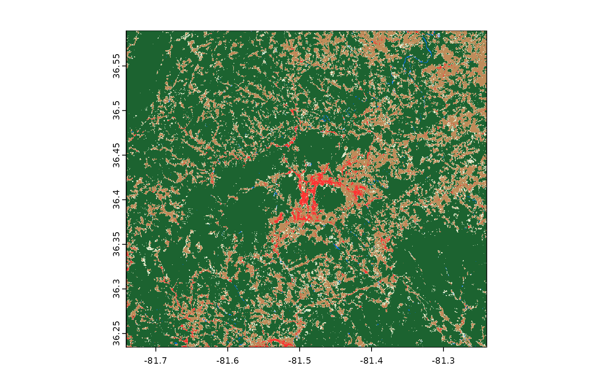
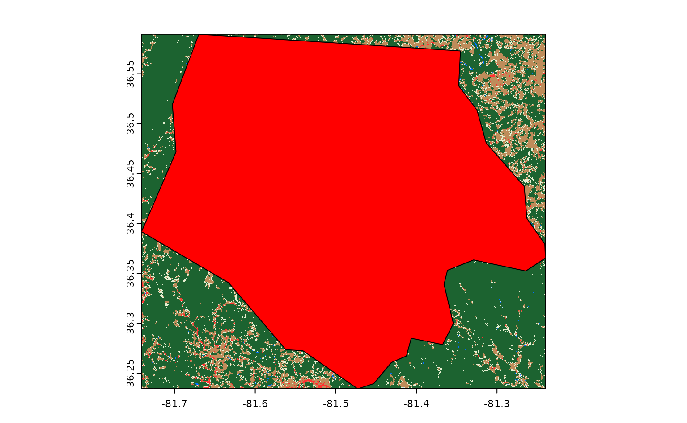
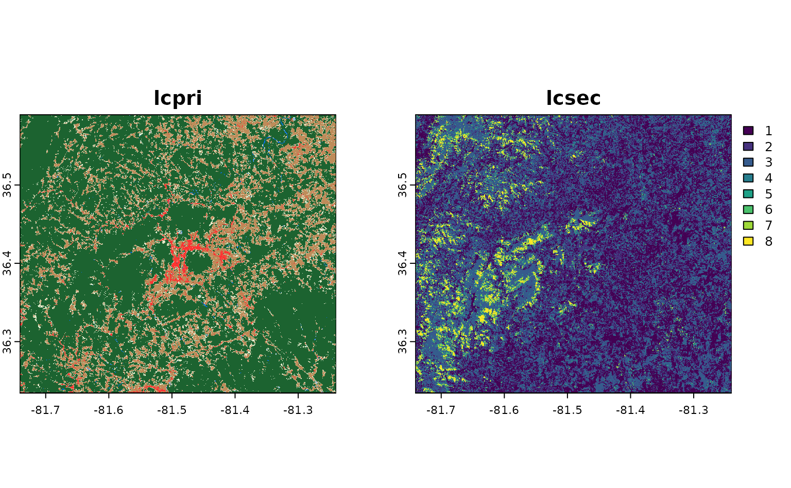
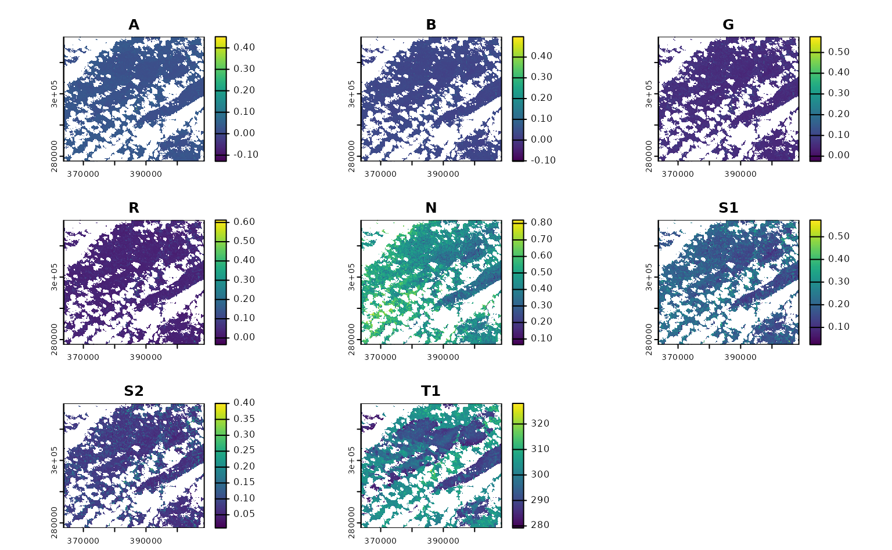
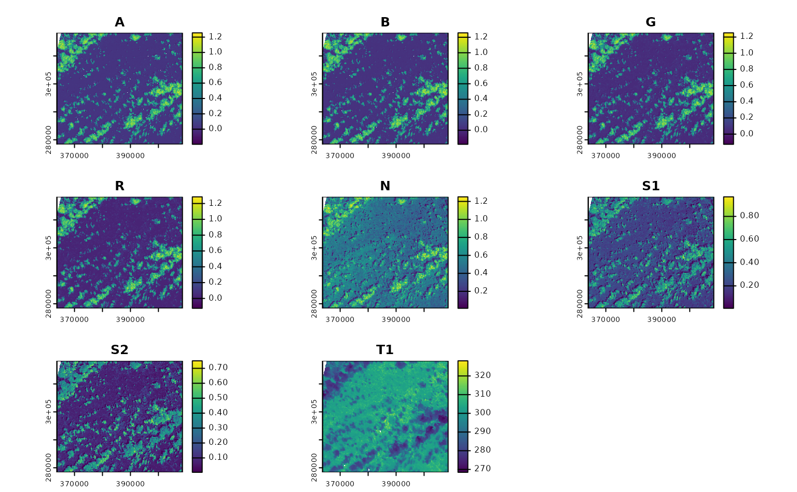
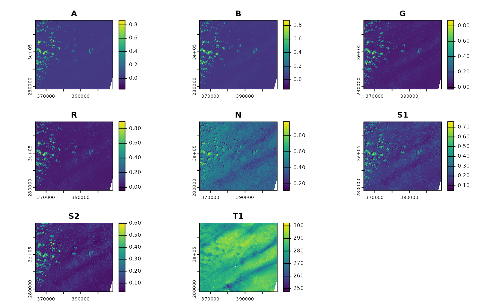
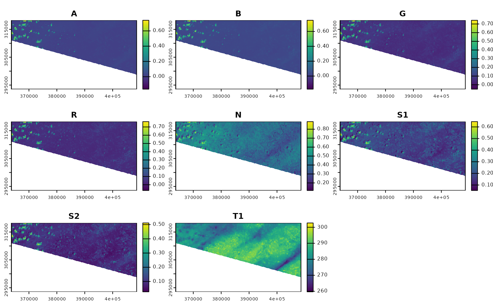
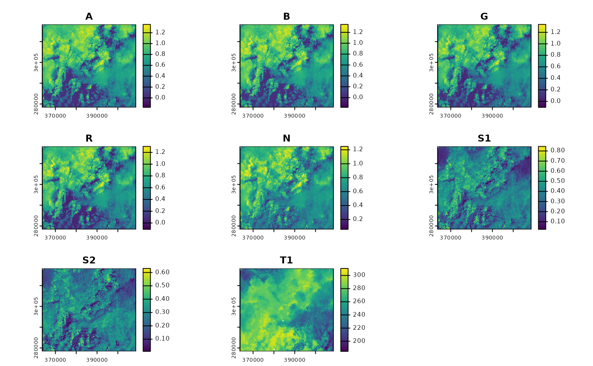
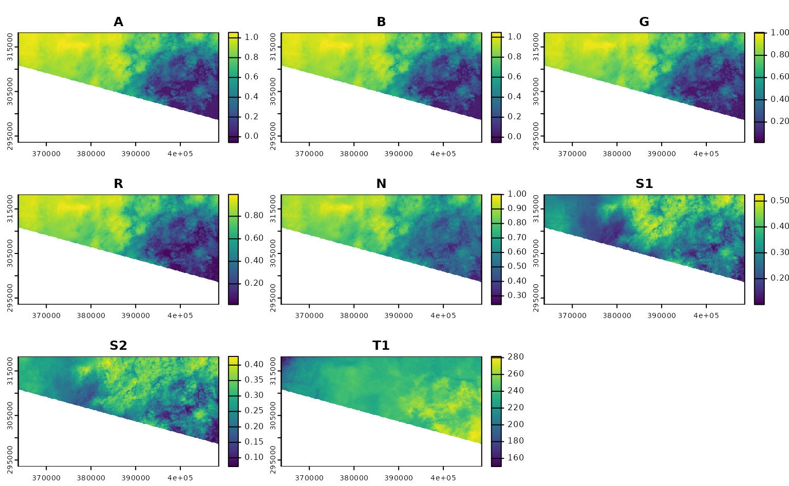
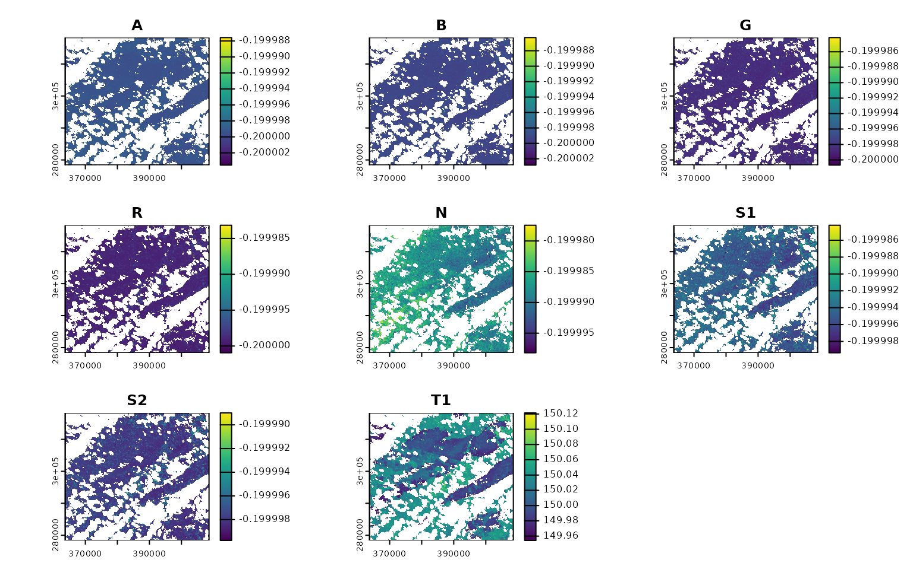

Downloading data from STAC APIs using rsi
Source:vignettes/articles/Downloading-data-from-STAC-APIs-using-rsi.Rmd
Downloading-data-from-STAC-APIs-using-rsi.RmdThis article walks through downloading data from STAC APIs using rsi, as well as using CQL2 to run more complicated queries. These tutorials are directly adapted from the downloading data and using CQL2 tutorials on the STAC website, originally written by Mike Mahoney and licensed CC-BY 4.0. This tutorial assumes you’re already pretty familiar with working with spatial data in R.
To get started, we’ll go ahead and load rsi, which we’ll be using to download our data:
We’ll also be using sf, to specify our spatial area of interest; terra, to visualize our downloaded data; and rstac, to show how STAC objects are generally organized. We aren’t going to attach any of these, in order to make it clear what functions are coming from rsi itself. They should all be installed as part of installing rsi, so you shouldn’t need to install anything new for this tutorial.
An overview of STAC itself
You can safely skip this section if you’re familiar with STAC and rstac.
Before we start downloading data, let’s talk a little bit about STAC. STAC is, to quote the project’s main repository, “a family of specifications aim to standardize the way geospatial asset metadata is structured and queried”. STAC provides a useful set of standardized metadata fields, and standardized ways of organizing and distributing data products, which make it a lot easier for data producers to document and share their data, and for data consumers to discover, query, access, and harmonize available products.
There’s some amount of unavoidable complexity that you need to push through before it actually feels easier, though. STAC introduces a number of new object types, each of which have their own standardized metadata fields and behaviors. The actual geospatial data you want to access is called an asset. Multiple assets which share metadata – in particular, which share a spatiotemporal extent – may be grouped into a STAC item, and multiple items which share metadata may be grouped into a STAC collection. STAC APIs then expose these objects to the internet, and let users explore them via HTTP requests.
To give a more concrete example: the red band of a single Landsat image would be a STAC asset. It would be combined with all the other bands acquired from that same image into a STAC item, which would then be combined with all other available Landsat images into a STAC collection. If this collection was then included in a STAC API, you could send a request to list all the available collections, to list all the items included in the Landsat collection, or to list all the assets available in a given item. You could also narrow down the results of these requests using queries – listing only the items inside a given spatiotemporal bounding box, or under a certain cloud cover threshold, for instance.
This explanation is a very simplified overview of the STAC family of standards – for instance, items may also be grouped into catalogs, and collections and catalogs may themselves be grouped into other collections and catalogs. For all practical purposes however, if your main interest is downloading data from STAC APIs, the simplified explanation is pretty decent.
For instance, we can see this organization in the wild by using rstac to explore a public STAC API. Microsoft hosts a STAC API as part of their Planetary Computer; we’ll use their API for the rest of this tutorial.
To start downloading data, we’ll first need to let rstac know what
STAC API we want to query and download from. To do so, we’ll pass the
URL of the Planetary Computer STAC API to the rstac::stac()
function:
stac_source <- rstac::stac(
"https://planetarycomputer.microsoft.com/api/stac/v1"
)
stac_source
#> ###rstac_query
#> - url: https://planetarycomputer.microsoft.com/api/stac/v1/
#> - params:
#> - field(s): version, base_url, endpoint, params, verb, encodeAs you can see, the output of stac() is an
RSTACQuery object, which contains information about an HTTP
query. Specifically, it’s worth highlighting that this object is a
representation of a future HTTP query, not the results of one
that we’ve already run! In order to actually execute these requests, we
need to use rstac::get_request() (or
rstac::post_request(), depending on what HTTP verb your
STAC API is expecting). If we use get_request() to query
the Planetary Computer STAC API, we get a brief description of what this
API provides:
rstac::get_request(stac_source)
#> ###Catalog
#> - id: microsoft-pc
#> - description:
#> Searchable spatiotemporal metadata describing Earth science datasets hosted by the Microsoft Planetary Computer
#> - field(s):
#> type, id, title, description, stac_version, conformsTo, links, stac_extensionsBecause the RSTACQuery object is a representation of a
future query, we can use other functions in rstac to change our query
parameters and fields before we actually make a request. For instance,
we can use rstac::collections() to update our request to
query the /collections endpoint of the Planetary Computer
API, which lists all the collections available from this API:
stac_source |>
rstac::collections() |>
rstac::get_request()
#> ###Collections
#> - collections (123 item(s)):
#> - daymet-annual-pr
#> - daymet-daily-hi
#> - 3dep-seamless
#> - 3dep-lidar-dsm
#> - fia
#> - sentinel-1-rtc
#> - gridmet
#> - daymet-annual-na
#> - daymet-monthly-na
#> - daymet-annual-hi
#> - ... with 113 more collection(s).
#> - field(s): collections, linksThese collections are a subset of the data sets available in the Planetary Computer data catalog; the Planetary Computer is organized so that each collection corresponds to a distinct data set in the catalog.
For our purposes today, we’re going to be querying two different collections: first, the USGS Land Change Monitoring, Assessment, and Projection (LCMAP) collection, which provides (among other things) annual land cover classifications for the continental United States, and secondly the Landsat Collection 2 Level-2 collection, which provides global satellite imagery.
We can query what items are available for either collection using the
rstac::stac_search() function. We can limit our search to
2021 using the datetime argument, ask for up to 999 items
(the most Planetary Computer will return in a single request) using the
limit argument, and only search within the LCMAP collection
by using the collection’s ID of usgs-lcmap-conus-v13:
rstac::stac_search(
q = stac_source,
collections = "usgs-lcmap-conus-v13",
datetime = "2021-01-01/2021-12-31",
limit = 999
) |>
rstac::get_request()
#> ###Items
#> - features (422 item(s)):
#> - LCMAP_CU_032003_2021_V13_CCDC
#> - LCMAP_CU_031006_2021_V13_CCDC
#> - LCMAP_CU_031004_2021_V13_CCDC
#> - LCMAP_CU_031003_2021_V13_CCDC
#> - LCMAP_CU_031002_2021_V13_CCDC
#> - LCMAP_CU_030007_2021_V13_CCDC
#> - LCMAP_CU_030006_2021_V13_CCDC
#> - LCMAP_CU_030005_2021_V13_CCDC
#> - LCMAP_CU_030004_2021_V13_CCDC
#> - LCMAP_CU_030003_2021_V13_CCDC
#> - ... with 412 more feature(s).
#> - assets:
#> browse, dates, lcachg, lcachg_metadata, lcpconf, lcpconf_metadata, lcpri, lcpri_metadata, lcsconf, lcsconf_metadata, lcsec, lcsec_metadata, rendered_preview, sclast, sclast_metadata, scmag, scmag_metadata, scmqa, scmqa_metadata, scstab, scstab_metadata, sctime, sctime_metadata, tilejson
#> - item's fields:
#> assets, bbox, collection, geometry, id, links, properties, stac_extensions, stac_version, typeWe can see that there are 422 items inside this catalog for 2021.
Collectively, these items contain all LCMAP data for the continental
United States for 2021, with each item containing a number of assets.
We’ll be specifically downloading the lcpri and
lcsec assets in a minute – the primary and secondary land
cover classification layers of these data products.
To query the Landsat archives, we’d just swap out our collections
argument. I’m also going to drop the limit argument here –
there are way, way more than 1,000 Landsat images from 2021, and we
don’t need a full list of them right now:
rstac::stac_search(
q = stac_source,
collections = "landsat-c2-l2",
datetime = "2021-01-01/2021-12-31"
) |>
rstac::get_request()
#> ###Items
#> - features (250 item(s)):
#> - LC09_L2SR_088122_20211230_02_T2
#> - LC09_L2SR_088121_20211230_02_T2
#> - LC09_L2SR_088120_20211230_02_T2
#> - LC09_L2SR_088119_20211230_02_T2
#> - LC09_L2SR_088118_20211230_02_T2
#> - LC09_L2SR_088117_20211230_02_T2
#> - LC09_L2SR_088116_20211230_02_T2
#> - LC09_L2SR_088115_20211230_02_T2
#> - LC09_L2SR_088114_20211230_02_T2
#> - LC09_L2SR_088113_20211230_02_T2
#> - ... with 240 more feature(s).
#> - assets:
#> ang, atran, blue, cdist, coastal, drad, emis, emsd, green, lwir11, mtl.json, mtl.txt, mtl.xml, nir08, qa, qa_aerosol, qa_pixel, qa_radsat, red, rendered_preview, swir16, swir22, tilejson, trad, urad
#> - item's fields:
#> assets, bbox, collection, geometry, id, links, properties, stac_extensions, stac_version, typeIf we wanted a full list, we could pipe the outputs of our query
object to rstac::items_fetch() to iterate through all the
pages of our request. We aren’t going to do that right now – it takes a
long time and we don’t need to – but put a pin in this idea, for
later.
Downloading data from STAC APIs using rsi
It took us a thousand words, but we’ve finally reached the title of the vignette: how can we actually download data from this API?
We’ll start off downloading data for a relatively small region; namely, North Carolina’s Ashe County. We’ll use data included in the sf package to get the county’s geometry:
nc <- sf::read_sf(system.file("shape/nc.shp", package = "sf"))
ashe <- nc[1, ]
sf::st_geometry(ashe) |> plot()And… that’s all the prep we need. We can go ahead and use this object
with the get_stac_data() function from rsi, which takes a
number of arguments to determine which STAC data we’re trying
to get and what exactly we want to do with it. Let’s use it to download
the primary land cover classification asset from LCMAP for this area –
the lcpri asset:
ashe_lcpri <- get_stac_data(
# Spatial AOI:
aoi = ashe,
# Temporal AOI:
start_date = "2021-01-01",
end_date = "2021-12-31",
# Which asset do we want, from which collection, from which API:
asset_names = "lcpri",
stac_source = "https://planetarycomputer.microsoft.com/api/stac/v1",
collection = "usgs-lcmap-conus-v13",
# Where to save the file:
output_filename = tempfile(fileext = ".tif")
)
ashe_lcpri
#> [1] "/tmp/RtmpbAKu4D/file1df3161496ce.tif"And a few seconds later, we’ve got our data! The output from
get_stac_data() is a path to this data, saved as a raster
somewhere on our computer; that means we can pass this object to
terra::rast() and terra::plot() to load this
data into R and visualize it:

If we draw our Ashe county polygon on top of this raster, we can see
that get_stac_data() has only downloaded the portion of
this asset that falls within the bounding box we provided:

What if we wanted to download more than one raster asset? We could
choose to pass multiple asset names to asset_names. For
instance, if we wanted to also download the secondary land cover
classification for this area (called lcsec), we could
write:
get_stac_data(
aoi = ashe,
start_date = "2021-01-01",
end_date = "2021-12-31",
asset_names = c("lcpri", "lcsec"), # this is the only change!
stac_source = "https://planetarycomputer.microsoft.com/api/stac/v1",
collection = "usgs-lcmap-conus-v13",
output_filename = tempfile(fileext = ".tif")
) |>
terra::rast() |>
terra::plot()
Neat!
Now, as it happens, Ashe county is entirely contained inside a single LCMAP tile – so it’s returned by our API as a single STAC item. What if we wanted to download the same asset from a larger area, that included more than one item? For instance, what if we wanted to download these assets for all of North Carolina?
To do so, we just need to change our aoi object to our
nc object, specifying the entire state of North Carolina.
Internally, get_stac_data() will handle downloading the
relevant pieces of each object and merging them together:
get_stac_data(
aoi = nc, # this is the only change!
start_date = "2021-01-01",
end_date = "2021-12-31",
asset_names = c("lcpri", "lcsec"),
stac_source = "https://planetarycomputer.microsoft.com/api/stac/v1",
collection = "usgs-lcmap-conus-v13",
output_filename = tempfile(fileext = ".tif")
) |>
terra::rast() |>
terra::plot()If we wanted, we could parallelize these downloads using
future::plan(), and set up a progress bar using
progressr::handlers(). We won’t use these functions in this
vignette, but they can be extremely useful for speeding up and
monitoring larger downloads.
By default, the merging done by get_stac_data() does not
interpolate between overlapping pixels, and instead simply uses the
value from whichever pixel it processed last. That’s fine here, where
our tiles shouldn’t overlap (and pixel values should be identical if
they do), but probably isn’t ideal if you want to combine images from
multiple time periods into a single composite.
For instance, if we want to download a composite of all the available
Landsat images over Ashe county from a given month, we’d probably want
to calculate the median value of each pixel, instead of simply taking
the last value from each. We could do that by adding
composite_function = "median" to our
get_stac_data() call.
But that said, we’d probably want to do a number of other things, too. For instance, we probably don’t want to include images of clouds, or dark shadows, in that composite; we also probably only want images from some subset of Landsat missions, and to rescale our bands to retrieve original measurement values, and so on and so forth. This all sounds really fiddly.
For that reason, rsi provides a function,
get_landsat_imagery(), which wraps
get_stac_data() and sets a number of arguments to helpful
default values. We use the following block of code to see exactly what
defaults have been changed:
# Get the arguments, and default values, from
# get_stac_data and get_landsat_imagery
gsd_formals <- formals(get_stac_data)
gli_formals <- formals(get_landsat_imagery)
# Drop empty arguments
gsd_formals <- gsd_formals[vapply(gsd_formals, class, character(1)) != "name"]
gli_formals <- gli_formals[vapply(gli_formals, class, character(1)) != "name"]
# Highlight changed default values
setdiff(gli_formals, gsd_formals)
#> $platforms
#> c("landsat-9", "landsat-8")
#>
#> $pixel_x_size
#> [1] 30
#>
#> $asset_names
#> rsi::landsat_band_mapping$planetary_computer_v1
#>
#> $stac_source
#> attr(asset_names, "stac_source")
#>
#> $collection
#> attr(asset_names, "collection_name")
#>
#> $query_function
#> attr(asset_names, "query_function")
#>
#> $download_function
#> attr(asset_names, "download_function")
#>
#> $sign_function
#> attr(asset_names, "sign_function")
#>
#> $mask_band
#> attr(asset_names, "mask_band")
#>
#> $mask_function
#> attr(asset_names, "mask_function")
#>
#> $composite_function
#> [1] "median"
#>
#> $gdal_config_options
#> c(VSI_CACHE = "TRUE", GDAL_CACHEMAX = "30%", VSI_CACHE_SIZE = "10000000",
#> GDAL_HTTP_MULTIPLEX = "YES", GDAL_INGESTED_BYTES_AT_OPEN = "32000",
#> GDAL_DISABLE_READDIR_ON_OPEN = "EMPTY_DIR", GDAL_HTTP_VERSION = "2",
#> GDAL_HTTP_MERGE_CONSECUTIVE_RANGES = "YES", GDAL_NUM_THREADS = "ALL_CPUS")Some of these defaults make sense: we can see that our function is going to be downloading data from Landsat-9 and Landsat-8, at a 30 meter resolution, and compositing images by calculating the median of each pixel’s measurements. That’s all well and good.
But some of these defaults are a bit confusing. We’re apparently
setting our asset_names argument to some random object we
haven’t seen before, and then setting our STAC API’s URL, the collection
we’re downloading from, the method we’re using to query the API, and a
few things (including some arguments that look like they control masking
the downloaded image) based on attributes of that object?
Basically, yes. When you load rsi, you also load a handful of “band
mapping” objects, which can be used to control how rsi functions
download and process data. These objects are organized by the collection
of data they correspond to, and contain sub-objects for all of the
different supported STAC APIs that you can use to download this data
from. For instance, the landsat_band_mapping contains
information that rsi can use to download imagery from the Planetary
Computer:
landsat_band_mapping
#> $planetary_computer_v1
#> An rsi band mapping object with attributes:
#> names mask_band mask_function stac_source collection_name query_function download_function sign_function class
#>
#> coastal blue green red nir08 swir16 swir22 lwir lwir11
#> "A" "B" "G" "R" "N" "S1" "S2" "T" "T1"While the sentinel2_band_mapping additionally contains
information about how to download data from both versions of the STAC
API provided by Amazon Web Services’ Open Data portal:
sentinel2_band_mapping
#> $aws_v0
#> An rsi band mapping object with attributes:
#> names mask_band mask_function stac_source collection_name query_function class
#>
#> B01 B02 B03 B04 B05 B06 B07 B08 B8A B09 B11 B12
#> "A" "B" "G" "R" "RE1" "RE2" "RE3" "N" "N2" "WV" "S1" "S2"
#>
#> $aws_v1
#> An rsi band mapping object with attributes:
#> names mask_band mask_function stac_source collection_name query_function download_function class
#>
#> blue coastal green nir nir08 nir09 red rededge1
#> "B" "A" "G" "N" "N2" "WV" "R" "RE1"
#> rededge2 rededge3 swir16 swir22
#> "RE2" "RE3" "S1" "S2"
#>
#> $planetary_computer_v1
#> An rsi band mapping object with attributes:
#> names mask_band mask_function stac_source collection_name query_function class scl_name download_function sign_function
#>
#> B01 B02 B03 B04 B05 B06 B07 B08 B8A B09 B11 B12
#> "A" "B" "G" "R" "RE1" "RE2" "RE3" "N" "N2" "WV" "S1" "S2"These objects are called “band mapping” objects because the contents of the object explain how to map asset names, as understood by a given STAC API, to the standardized names used by the Awesome Spectral Indices project. But they contain a good bit of additional information on how to use each individual STAC API, attached to the list as attributes; these include the URL for the relevant STAC API, information on how to query the API and “sign” item URLs for authentication purposes, and (when possible) information on how to mask low-quality pixels out of each image.
Because all of this endpoint-specific information is attached to each
band mapping object, rsi can understand how to download and mask your
desired product from your desired API based entirely on the
asset_names argument. Changing the asset_names
to a different STAC API’s subobject will automatically update all of the
other arguments as necessary.
So, with that out of the way, let’s actually download and composite some Landsat imagery. We need to transform our data into a projected coordinate reference system in order for our compositing to work, and we’ll just grab imagery from June 2021 in order to reduce the number of images we need to download. With those changes in mind, our function to download Landsat imagery looks like this:
projected_ashe <- sf::st_transform(ashe, 6542)
get_landsat_imagery(
aoi = projected_ashe,
start_date = "2021-06-01",
end_date = "2021-06-30",
output_filename = tempfile(fileext = ".tif")
) |>
terra::rast() |>
terra::plot()
You can see transparent parts of each band where pixels in all images
from June were automatically masked out, due to their value in their
corresponding QA band. This behavior happens automatically, controlled
by the mask_band and mask_function attributes
in our band mapping object. The masking here is pretty basic; only
pixels whose QA
band indicates that they were “clear with lows set” are accepted,
and all others are masked out:
attr(landsat_band_mapping$planetary_computer_v1, "mask_band")
#> [1] "qa_pixel"
attr(landsat_band_mapping$planetary_computer_v1, "mask_function")
#> function (raster, include = c("land", "water", "both"))
#> {
#> if (missing(include))
#> include <- include[[1]]
#> include <- rlang::arg_match(include, multiple = TRUE)
#> classes <- numeric()
#> if (any(c("land", "both") %in% include))
#> classes <- c(classes, 21824)
#> if (any(c("water", "both") %in% include))
#> classes <- c(classes, 21952)
#> terra::`%in%`(raster, classes)
#> }
#> <bytecode: 0x56526bac7378>
#> <environment: namespace:rsi>You can control this behavior by passing your own function to the
mask_function argument, or set this argument to
NULL to skip masking altogether.
If we just wanted a subset of bands in this image, we could subset
the object that’s passed to asset_names. For instance, to
only download the A band (what Planetary Computer calls
coastal), we could subset our object like this:
landsat_band_mapping$planetary_computer_v1["coastal"]
#> An rsi band mapping object with attributes:
#> mask_band mask_function stac_source collection_name query_function download_function sign_function class names
#>
#> coastal
#> "A"And last but not least, if we wanted to skip compositing altogether,
we could set the composite_function argument to
NULL in order to download each image in our spatiotemporal
AOI separately:
get_landsat_imagery(
aoi = projected_ashe,
start_date = "2021-06-01",
end_date = "2021-06-30",
output_filename = tempfile(fileext = ".tif"),
composite_function = NULL,
mask_function = NULL # otherwise half of these images are blank
) |>
lapply(terra::rast) |>
lapply(terra::plot) |>
invisible()
#> Warning: `mask_function` was NULL, but `mask_band` was not `NULL`.
#> ℹ `mask_band` will be ignored (not downloaded or used).
Using CQL2 to refine queries to STAC APIs
This last section of the tutorial focuses on using CQL2 within rsi to
filter the items that will be downloaded. If you aren’t familiar with
using CQl2 in rstac, go read the
corresponding tutorial this is adapted from first; this tutorial
assumes you understand rstac::ext_filter() already.
By the end of that tutorial, we had written relatively complex filters using rstac and CQL2. For instance, if we wanted to find Landsat images:
- from June 2021,
- covering Ashe county,
- from Landsat-8,
- with less than 50% cloud cover,
We could write a filter that looks something like this:
geometry <- ashe |>
sf::st_transform(4326) |>
sf::st_bbox() |>
rstac::cql2_bbox_as_geojson()
datetime <- rstac::cql2_interval("2021-06-01", "2021-06-30")
rstac::stac("https://planetarycomputer.microsoft.com/api/stac/v1") |>
rstac::ext_filter(
collection == "landsat-c2-l2" &&
t_intersects(datetime, {{ datetime }}) &&
s_intersects(geometry, {{ geometry }}) &&
platform == "landsat-8" &&
`eo:cloud_cover` < 50
) |>
rstac::post_request()
#> ###Items
#> - features (1 item(s)):
#> - LC08_L2SP_017035_20210628_02_T1
#> - assets:
#> ang, atran, blue, cdist, coastal, drad, emis, emsd, green, lwir11, mtl.json, mtl.txt, mtl.xml, nir08, qa, qa_aerosol, qa_pixel, qa_radsat, red, rendered_preview, swir16, swir22, tilejson, trad, urad
#> - item's fields:
#> assets, bbox, collection, geometry, id, links, properties, stac_extensions, stac_version, typeHow the heck do we use that query inside get_stac_data()
and friends?
Well, by default rsi uses a query function called
default_query_function(). This function is exported, which
means you can see its source code by calling the function without
parentheses:
default_query_function
#> function (bbox, stac_source, collection, start_date, end_date,
#> limit, ...)
#> {
#> lifecycle::deprecate_warn("0.2.0", "default_query_function()",
#> "rsi_query_api()")
#> rsi_query_api(bbox = bbox, stac_source = stac_source, collection = collection,
#> start_date = start_date, end_date = end_date, limit = limit,
#> ...)
#> }
#> <bytecode: 0x56526de45bb0>
#> <environment: namespace:rsi>This is a relatively straightforward function – it composes a
datetime from the start date and end date, then uses rstac to get a list
of all the relevant items in its spatiotemporal bounding box (making
sure to use items_fetch() to retrieve all pages of results
– told you it would come up later!).
This works for most STAC APIs, but if we want to perform a more
complicated query we can provide our own custom query function in its
place. For instance, to perform the same CQL2 query as before, we can
effectively copy and paste our code from above into a new query function
and pass that to get_landsat_imagery():
custom_query_function <- function(bbox,
stac_source,
collection,
start_date,
end_date,
limit,
...) {
# `bbox` is guaranteed to be in 4326 already
geometry <- rstac::cql2_bbox_as_geojson(bbox)
# `start_date` and `end_date` will be processed
# and so hopefully will be in RFC-3339 formats
datetime <- rstac::cql2_interval(start_date, end_date)
request <- rstac::ext_filter(
rstac::stac(stac_source),
collection == {{ collection }} && # I could have left this hard-coded!
t_intersects(datetime, {{ datetime }}) &&
s_intersects(geometry, {{ geometry }}) &&
platform == "landsat-8" &&
`eo:cloud_cover` < 50
)
rstac::items_fetch(rstac::post_request(request))
}
get_landsat_imagery(
aoi = projected_ashe,
start_date = "2021-06-01",
end_date = "2021-06-30",
output_filename = tempfile(fileext = ".tif"),
query_function = custom_query_function
) |>
terra::rast() |>
terra::plot()
If we know how to express our desired query in CQL2, we can write arbitrarily complex functions to make sure we’re only downloading the precise data we’re interested in.
A quick note on rsi and other packages for downloading STAC assets
rsi is not nearly the only package aiming to help R users take advantage of STAC APIs and build cloud-native geospatial workflows. As shown above, rsi is fundamentally built on top of the excellent rstac package, which I think is a fantastic tool for interactively exploring STAC APIs as well as building and executing queries. My hope is that rsi can provide a useful layer of abstraction over rstac for efficiently downloading assets and performing some of the most common rescaling, masking, and compositing tasks involved in standard data processing workflows.
There are also several other packages which also implement workflows for efficiently accessing and processing data from STAC endpoints, among them the gdalcubes and sits packages. A core difference between rsi and these packages is that rsi does not have a data model: rsi is focused entirely on finding the bits of data you want from remote endpoints, and getting those bits on your local machine for you to process with your normal spatial data tooling. There are no new classes in rsi (other than the band mapping objects), and the outputs of functions are local rasters. This is an approach that fits better in my head than the more abstract delayed computations in some other packages; at the same time, it’s possible that this approach can be less efficient, downloading more data at finer resolutions than is actually needed for a given task. As a result, users need to make sure they’re only requesting data they actually need.